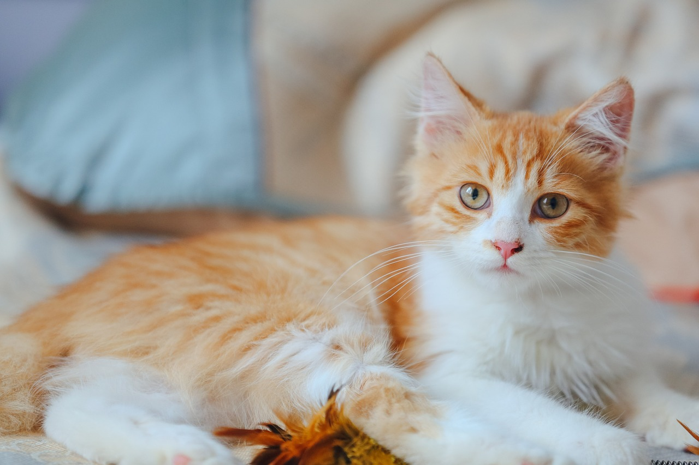
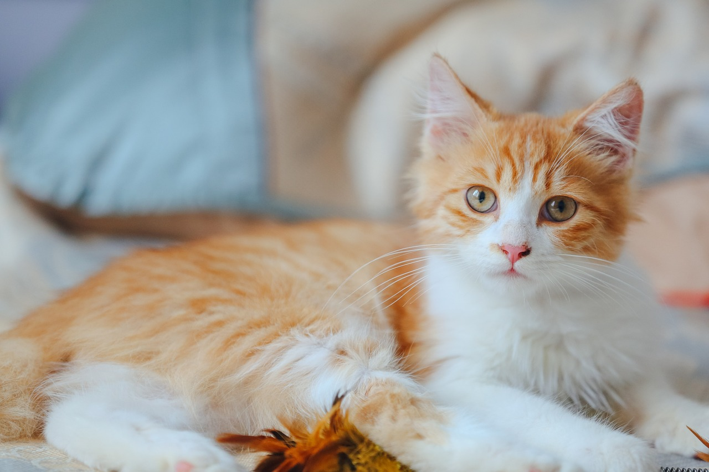

DOGS


The dog is a domesticated descendant of the wolf. Also called the domestic dog, it is derived from the extinct Pleistocene wolf, and the modern wolf is the dog's nearest living relative. Dogs were the first species to be domesticated by hunter-gatherers over 15,000 years ago before the development of agriculture. Due to their long association with humans, dogs have expanded to a large number of domestic individuals and gained the ability to thrive on a starch-rich diet that would be inadequate for other canids.
The dog has been selectively bred over millennia for various behaviors, sensory capabilities, and physical attributes. Dog breeds vary widely in shape, size, and color. They perform many roles for humans, such as hunting, herding, pulling loads, protection, assisting police and the military, companionship, therapy, and aiding disabled people. Over the millennia, dogs became uniquely adapted to human behavior, and the human-canine bond has been a topic of frequent study. This influence on human society has given them the sobriquet of "man's best friend".
 
